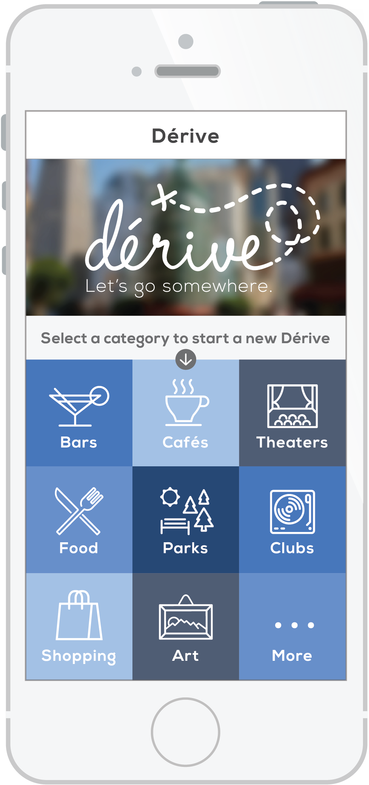
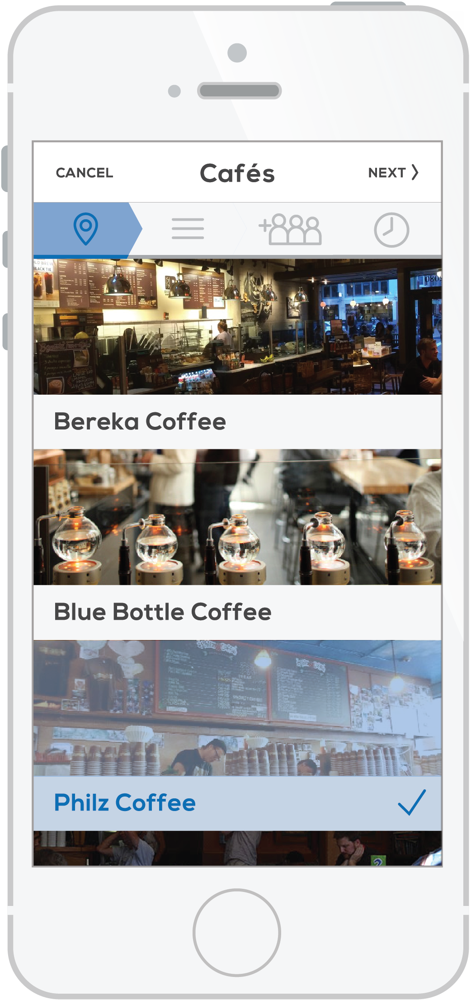
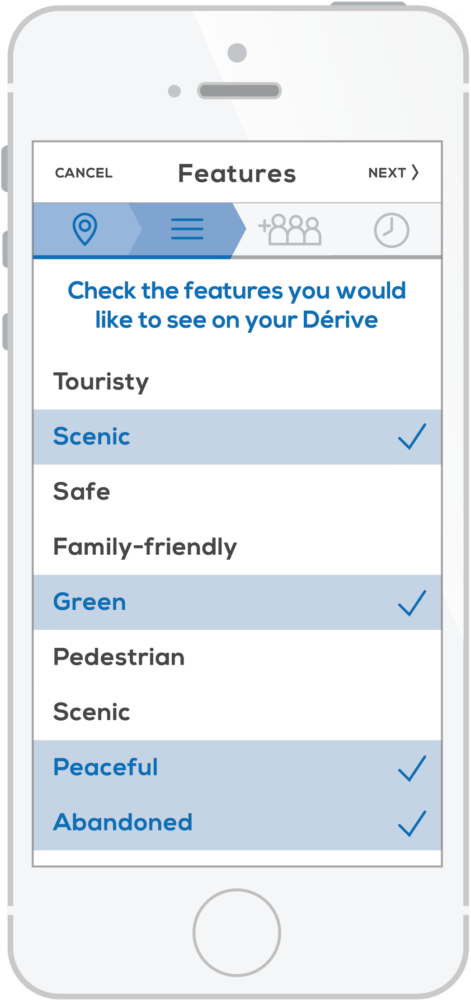
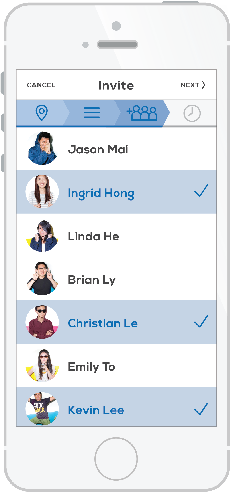
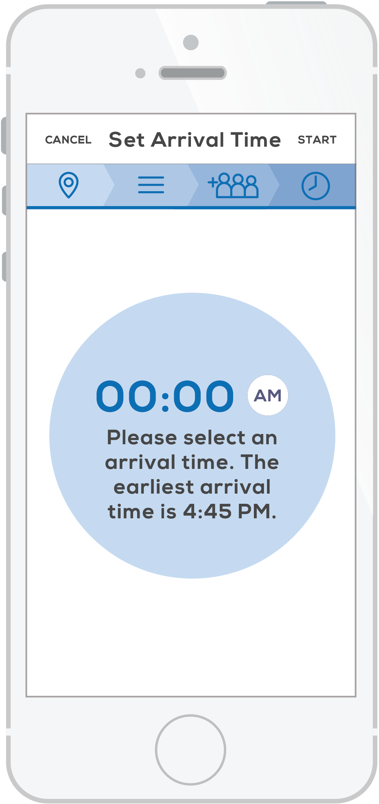
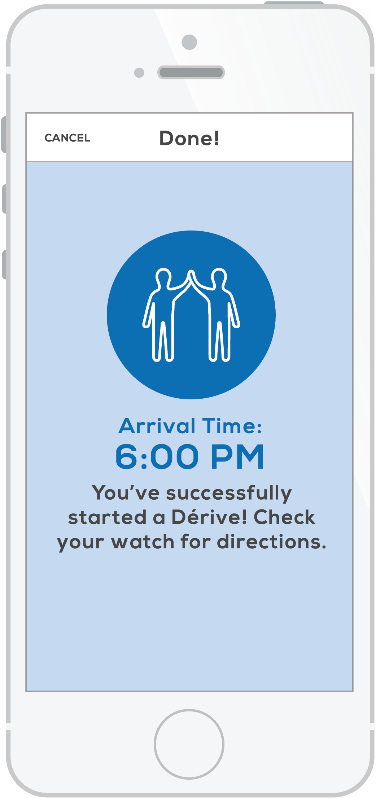
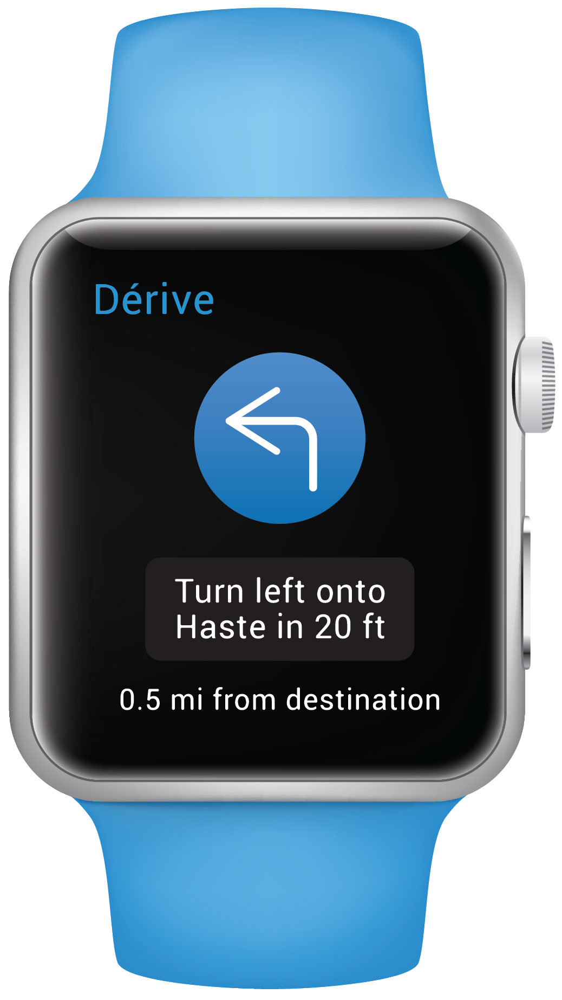

User begins creating a journey (‘Dérive’) by selecting a category of the types of places he/she wants to visit during the Dérive
Cal Community Music
Branding, Web DesignTools Used
- Illustrator
- Framer.js
- Coffeescript
Overview
For an assignment for the user interface class I took at UC Berkeley in the fall of 2014, I designed the user experience and interface for an urban navigation phone/smartwatch app. We were assigned to build this app around the idea of a dérive, which is a concept where “one drifts through a city in an unplanned way subconsciously directed by the surrounding architecture and geography with the ultimate goal of encountering an entirely new and authentic experience.”
Designing the user flow of the app was relatively easy; since the specs for this project were already fleshed out, I mainly focused on designing the look and feel of the app.

User selects as many intermmediate stops as desired from a list of nearby attractions
User selects as many intermmediate stops as desired from a list of nearby attractions

User selects the features he/she would like the Dérive to have
User selects the features he/she would like the Dérive to have

User chooses from the list of active friends he/she would like to invite on the Dérive
User chooses from the list of active friends he/she would like to invite on the Dérive

User sets the time of arrival at the final destination (determined by the app)
User sets the time of arrival at the final destination (determined by the app)

User is given an estimated arrival time, and the Dérive begins! Step-by-step directions are sent to the watch
User is given an estimated arrival time, and the Dérive begins! Step-by-step directions are sent to the watch

User receives an invitation to go on a Dérive with a friend

User is given step-by-step instructions on how to get to the next destination
User is given step-by-step instructions on how to get to the next destination

User is notified that he/she has reached the last destination
Designing the user flow of the app was relatively easy; since the specs for this project were already fleshed out, I mainly focused on designing the look and feel of the app.
Some notable design decisions:
- Because the app's concept is relatively simple, I chose to present the first step in creating a Dérive (picking a destination category) on the home screen rather making the user navigate through an additional screen and tapping a button in order to start a new Dérive.
- While the user is setting up his/her Dérive, the user can see what step in the process he/she is in by looking at the status bar near the top of the screen. The status bar also serves as a navigation bar so that the user can go back and edit his/her selections. The user also has the choice to cancel the Dérive.
- I chose to put the task of changing the user's status on the watch since it is a simple task to complete, and having it on the user's wrist is more convenient.
- I limited the navigation to simple direction notifications via smartwatch. I didn't want to present the user with a map since a) the watch's screen is tiny, and b) the user should focus on his/her surroundings and be enjoying the journey rather than interacting with his/her devices. The user will only have to look at the watch when he/she must make a turn.
- Because users who accept Dérive invitations do not know the destination, the name of the destination is shown when they have arrived (just in case they are confused as to which attraction was the chosen destination!).